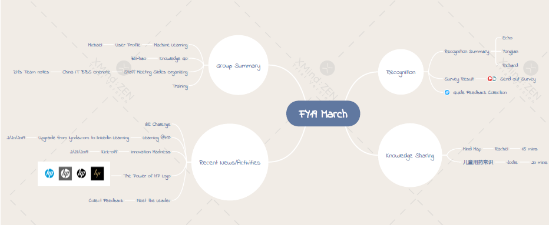

如何记笔记
Created by Xu Jian
###### May, 2019
前言
作为一个技术宅，很喜欢来学习一些自己感兴趣的技术，在学习的过程中，深感记笔记非常的重要。
笔记记得好，即使过上几年，再次翻看，还能记忆犹新。
笔记类别
从程序员的眼中，笔记可以分为：
- 信息：需要记录的内容。
- 代码：程序代码。
- 文档：个人，项目或者团队的活动中的一些内容。
- 交互文档：混合了代码，报表和文档。
- 文章：一般常用wiki，blog等发布。
一篇笔记，可以属于多个类别
交互文档：jupyter notebook， zeppelin
在学习Spark的时，第一次接触了zeppelin，它是Web笔记形式的交互式数据查询分析工具，可以用scala和sql等语言展示数据，也可以用markdown来编写文档。这种代码，报表（可视化）和文档混合的方式，真的感觉耳目一新。
juputer notebook example
什么是好笔记
- 好理解： 好的笔记是容易理解的
- 易于复现：好的笔记，也应该是容易被重现的
- 持续更新：能持续更新
笔记的安全性
既然要分享，笔记的安全性非常重要。不同的笔记也有不同的发布范围。
Internet：
- 公开。没有安全性限制
- 私有。信息是私有的，但可以授权任意的人员来访问
公司：仅在公司内部网络才可以访问。
- 公司/部门：信息在公司或部门内部是公开的
- 项目：信息在项目组内部是公开的
- 私有：信息是私有的，可以授权公司同事访问
工具
任何工具的流行，离不开需求，也离不开合适的环境。
历史
个人而言，使用的工具经历了以下的过程。 - 原始社会：文本文件，word，excel文件 - 工业时代：evernote， onenote， 网易云笔记 - 信息时代：zeppelin，jupyter notebook + 思维导图 - 互联时代： github(pages, wiki) + typora(markdown) + jupyter notebook + pandoc …
以上这些工具，我们都会混合使用，没有一种工具可以解决所有的问题。
原始社会：文本文件，word，excel文件
文件分散在计算机的各处，时间长了，放在哪里都忘了,查找起来很不方便。
img
工业时代：evernote， onenote， 网易云笔记
 img
img
信息时代：zeppelin，jupyter notebook + 思维导图
 example notebook of Lorenz differential equations
example notebook of Lorenz differential equations
思维导图
思维导图，则另辟蹊径，是表达发散性思维的有效图形思维工具。
bg1
互联时代： github(pages, wiki) + typora(markdown) + jupyter notebook + pandoc …
面临的问题： - OneNote等工具太强大，造成笔记泛滥，如何提升笔记的价值？ - 学习时记笔记，开发时写文档，分享时写ppt，如何能用统一的方式来管理呢？
分享
知识的根本目的和价值是分享。
 Data linkage and data sharing in clinical trials: Good in principle, complex in practice
Data linkage and data sharing in clinical trials: Good in principle, complex in practice
当需要分享知识的时候，至少都会花上一些心思，这使得知识更加有价值，易于理解。
Markdown
is a lightweight markup language with plain text formatting syntax. Its design allows it to be converted to many output formats
 markdown
markdown
Pandoc
Pandoc是一个标记语言转换工具，可实现不同标记语言间的格式转换，堪称该领域中的“瑞士军刀”。
pandoc -t revealjs -s take_notes_ppt.md \
-o take_notes_ppt.html \
-V revealjs-url=https://revealjs.com \
-V theme=moon
总体的
采用typora可以在本地非常方便的编写markdown文档，然后用github可以很容易分享给其他人。 在公司内部，其实我们一直有信息交流，分享的平台，但问题是，功能和性能很难得到非常有效的保证。有的时候，性能很慢，打开一个文档需要10秒；有的时候同步很慢；有的时候编辑麻烦，格式不支持，很无奈。总而言之，这是一种基于中心化管理的方式，位于中心的服务承载了太多的职责，而每一项往往都很难做的很好。而github不同，它代表的是一种分布式的管理方式，所有的编辑都可以在本地来做，我们可以用自己喜欢的工具，速度飞快，畅快随心。github只是你本地库的一种同步，这种同步先天支持很好的分享和协同。
工具的要求
下面对工具的要求，并不是对单一工具的，而是对于所用的工具集来说的。
- 简单易用
- 多种格式： 信息，文档，表格，代码，图表都能支持。
- 编辑方便。不方便的例子有jupyter notebook添加图片麻烦
- 快速检索。不好的例子有网易云笔记的搜索功能
- 易于分享。支持分享到项目，部门，公司或互联网。
teams + onenote … vs. github + typora …
| 简单易用 |
5 |
3 |
后者复杂的多 |
| 多种格式 |
4 |
4 |
前者对代码的支持不够好 |
| 编辑方便 |
5 |
4 |
前者功能强大，但后者善于精细化的控制 |
| 快速检索 |
4 |
5 |
由于纯文本和开放性，后者可以实现超强的搜索功能 |
| 易于分享 |
4 |
5 |
前者适合内部分享，后者无限制 |
teams + onenote … vs. github + typora …
- 总体上两套工具集合都很强大。
- teams + onenote 简单易用，更加成熟
- github + typora 开放自由，扩展性更好
- 对于程序员来说，github + typora 更有诱惑性。
Thank You :thought_balloon:
Thank you :thought_balloon:
Thank you :thought_balloon:
Thank you :thought_balloon:
Thank you :thought_balloon:
Thank you :thought_balloon: